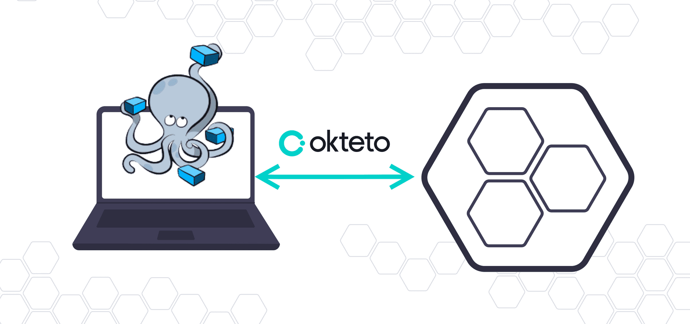
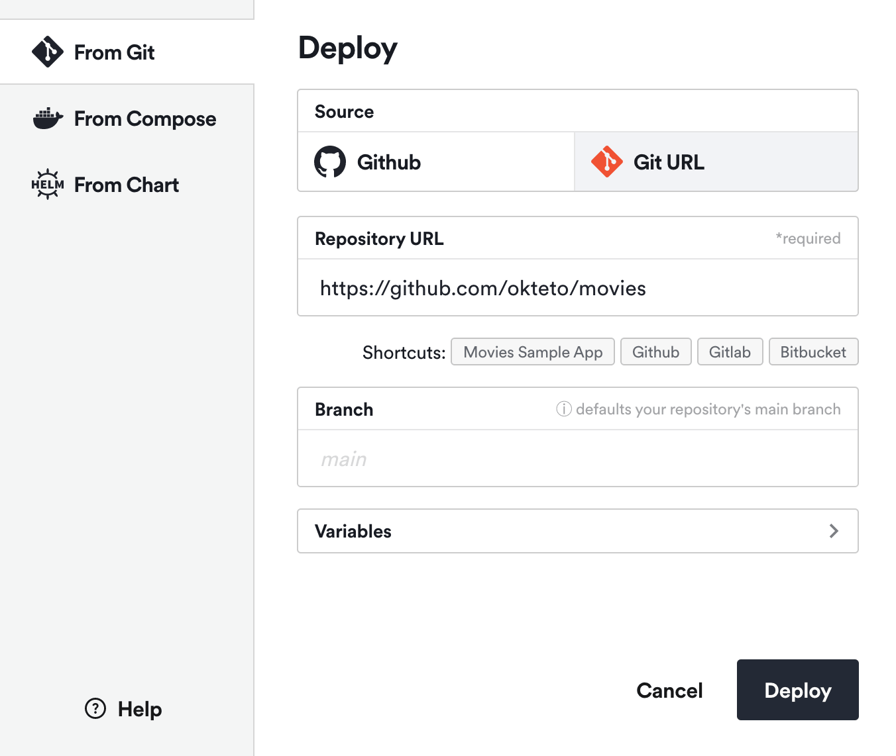
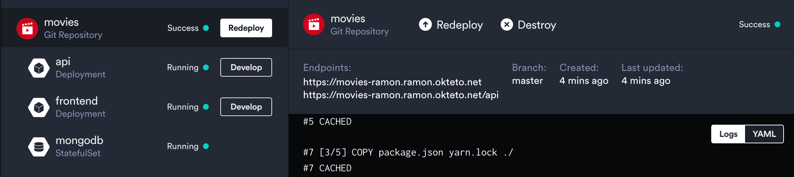
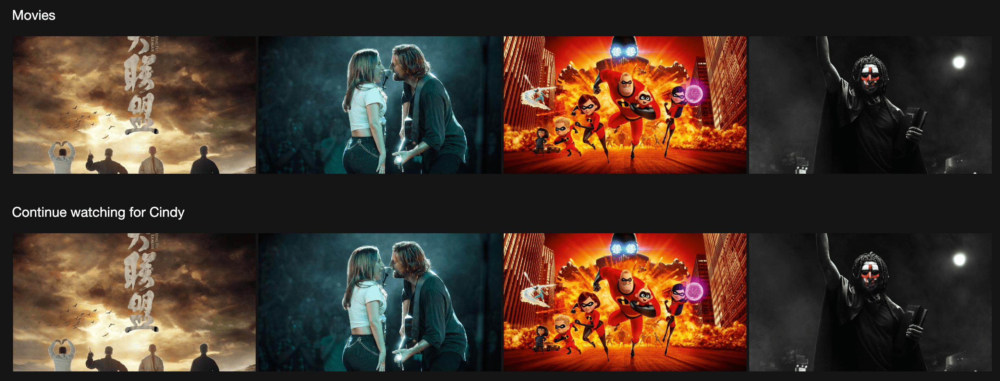
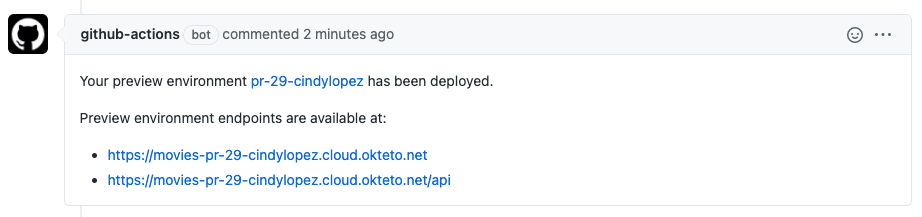
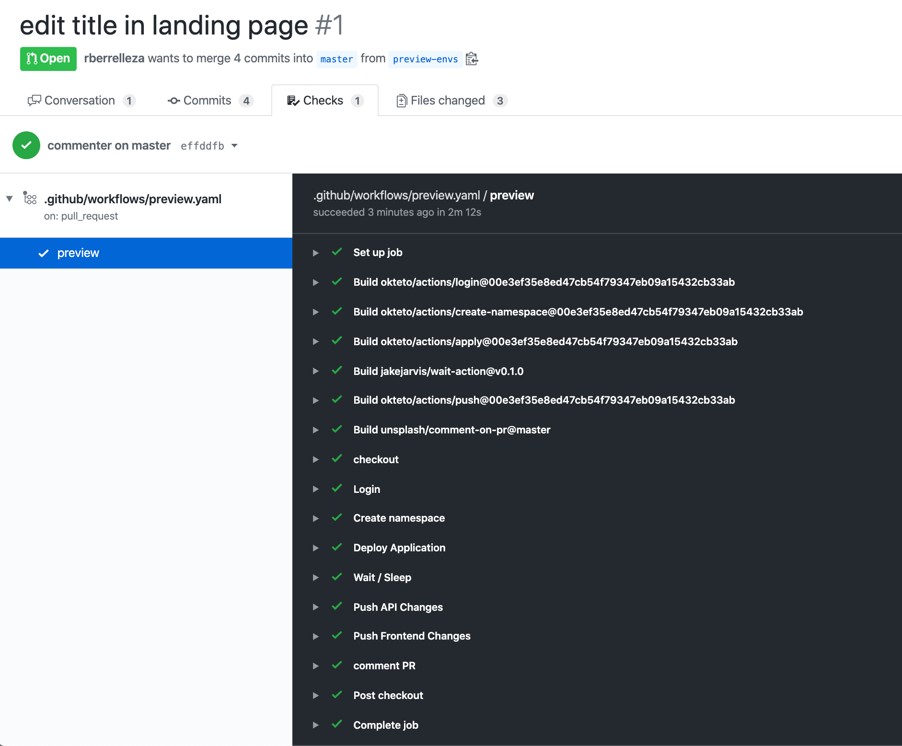

Okteto 是一个神奇的工具，可以方便我们快速构建开发环境！
Okteto 是一个通过在 Kubernetes 中来开发和测试代码的应用程序开发工具，可以通过 Okteto 在 Kubernetes 中一键为我们启动一个开发环境，非常简单方便。

1. Okteto 命令工具安装
Okteto为Kubernetes应用程序提供了本地开发环境的体验，你可以在你的IDE中进行代码编辑，然后Okteto会自动将它同步到你的集群上面，验证对应功能。Okteto CLI是开源的，代码可在Github上获得，它适用于任何Kubernetes集群的客户端工具。
# MacOS/Linux
$ brew install okteto
$ curl https://get.okteto.com -sSfL | sh
# Windows
$ scoop install okteto
# Github
https://github.com/okteto/okteto/releases
2. Okteto 命令工具使用
| 编号 | 参数 | 对应使用含义 | 后缀参数 |
|---|---|---|---|
| 1 | okteto login [URL] |
登录到服务并下载令牌和证书 | --token |
| 2 | okteto init |
自动生成 Okteto 清单文件等 | --file |
| 3 | okteto up |
激活开发容器 | |
| 4 | okteto down |
停用开发容器并恢复之前的配置 | --file/--namespace/--context |
| 5 | okteto exec COMMAND |
在开发容器中执行执行命令 | --file/--namespace/--context |
| 6 | okteto build [PATH] |
从 Dockerfile 中打包镜像 | --file/--tag/--no-cache |
| 7 | okteto status --info |
文件同步进程状态 | --file/--namespace/--watch |
| 8 | okteto restart |
重新启动服务 | --file/--namespace/--context |
| 9 | okteto push |
推送并重新部署到 Okteto 中 | --file/--namespace/--tag |
| 10 | okteto doctor |
检查环境并生成诊断日志 | - |
| 11 | okteto analytics [parameters] |
启用/禁用分析数据收集 | --disable |
| 12 | okteto namespace [namespace] |
下载名称空间的 k8s 凭据 | |
| 13 | okteto pipeline [command] |
管道管理命令 | - |
| 14 | okteto pipeline deploy |
部署管道服务 | --name/--namespace/--repository |
| 15 | okteto pipeline destroy |
删除管道服务 | --name/--namespace/--volumes |
| 16 | okteto stack [command] |
堆栈管理命令 | - |
| 17 | okteto stack deploy |
部署堆栈服务 | --file/--namespace/--context |
| 18 | okteto stack destroy |
删除堆栈服务 | --file/--namespace/--context |
| 19 | okteto version |
显示当前安装的版本 | - |
| 20 | okteto help |
显示完整的帮助 | - |
# format
$ okteto [options] <command> <subcommand> [parameters]
# analytics
➜ okteto analytics
✓ Analytics have been enabled
# status
$ okteto status --info
i Local syncthing url: http://localhost:60539
i Remote syncthing url: http://localhost:60538
i Syncthing username: okteto
i Syncthing password: ac0ee34a-b1aa-4a41-bc67-cec3128b6cfd
✓ Synchronization status: 100.00%
3. Okteto 启动配置文件
- 生成的
okteto.yml是描述开发容器的一种清单格式，它声明了部署目标、开发容器、要同步的文件夹以及激活开发容器所需的其他信息。
name: vote
labels:
app.kubernetes.io/part-of: vote
app.kubernetes.io/component: api
image: python:3
command: ["python", "app.py"]
workdir: /usr/src/app
sync:
- .:/usr/src/app
environment:
- name=$USER
- environment=development
resources:
requests:
memory: "64Mi"
cpu: "250m"
limits:
memory: "128Mi"
cpu: "500m"
forward:
- 8080:80
- 5432:postgres:5432
reverse:
- 9000:9001
securityContext:
runAsUser: 1000
runAsGroup: 2000
fsGroup: 3000
capabilities:
add:
- SYS_PTRACE
4. Okteto 部署配置文件
Okteto Stacks 适合那些不想处理 Kubernetes 清单的复杂性的开发人员，其实现并扩展了 Compose 规范，使在 Kubernetes 中部署容器变得容易。
.stignore-> 同步需要忽略文件列表okteto.yml-> 服务启动生成的配置文件
namespace: development
services:
vote:
name: voting-app
build: vote
scale: 2
ports:
- 8080:8080
environment:
- ROOT_PASSWORD=${PASSWORD}
redis:
name: voting-redis
image: redis
ports:
- 6379
volumes:
- redis:/data
volumes:
redis:
forward:
- 8080:8080
deploy:
resources:
reservations:
cpu: 300m
memory: 500Mi
limits:
cpu: 500m
memory: 800Mi
restart_policy:
condition: on-failure
max_attempts: 3
# default .stignore for a go-based project
okteto.yml
.git
*.exe
*.exe~
*.dll
*.so
*.dylib
# Test binary, built with go test -c
*.test
# Output of the go coverage tool, specifically when used with LiteIDE
*.out
5. Okteto 远程部署服务
作为启用开发容器的一部分，okteto up 执行以下步骤：
- 一个极简
SSH服务器被注入到您的开发容器中 - 从开发容器的本地端口创建端口转发到
22端口 - 主机条目将添加到你的本地
.ssh/config文件中，其值如下：
Host MANIFEST_NAME.okteto
HostName localhost
Port PORT
StrictHostKeyChecking no
UserKnownHostsFile /dev/null
okteto up 使用 SSH 服务器来运行远程命令并将端口转发到你的开发容器，SSH 服务器可以将你的开发容器与支持远程开发的 IDE 集成，例如 VS Code 或 PyCharm。
- 使用 SSH 连接
# 开发容器启动并运行
$ ssh -P PORT localhost
# 还可以使用添加到本地SSH配置中的主机条目进行SSH
$ ssh MANIFEST_NAME.okteto
- 安全巩固
# 第一次运行时，将创建SSH秘钥对
# $HOME/.okteto/id_rsa_okteto
# $HOME/.okteto/id_rsa_okteto.pub
$ okteto up
6. Okteto 的云服务使用
Okteto Cloud 提供了对安全的 Kubernetes 名称空间的即时访问，使开发人员能够完全在云中编写、构建和运行 Kubernetes 应用程序。
- Step 1: Deploy the Movies App



- Step 2: Install the Okteto CLI
# MacOS/Linux
$ brew install okteto
$ curl https://get.okteto.com -sSfL | sh
- Step 3: Configure access to your Okteto Cloud namespace
$ okteto namespace
Authentication required. Do you want to log into Okteto? [y/n]: y
What is the URL of your Okteto instance? [https://cloud.okteto.com]:
Authentication will continue in your default browser
✓ Logged in as cindy
✓ Updated context 'cloud_okteto_com' in '/Users/cindy/.kube/config'
- Step 4: Activate your development container
# clone
$ git clone https://github.com/okteto/movies
$ cd movies
# api component
$ cd api
$ okteto up
✓ Persistent volume successfully attached
✓ Images successfully pulled
✓ Files synchronized
Namespace: cindy
Name: api
Forward: 8080 -> 8080
9229 -> 9229
Welcome to your development container. Happy coding!
cindy:api src>
cindy:api src> env | grep MONGODB_PASSWORD
MONGODB_PASSWORD=Password!1@2
cindy:api src> yarn start
yarn run v1.19.1
$ nodemon server.js
[nodemon] 1.19.2
[nodemon] to restart at any time, enter `rs`
[nodemon] watching dir(s): *.*
[nodemon] starting `node server.js`
Server running on port 8080.
GET /api/movies
GET /api/watching
- Step 5: Development time!
# server.js
db.collection('watching').find().toArray( (err, results) =>{
# info
[nodemon] restarting due to changes...
[nodemon] starting `node server.js`
Server running on port 8080.
7. okteto 与 github 集成
将展示如何使用 Okteto Cloud 和 Github Actions 为你的应用程序自动创建一个预览环境。
- Step 1: Fork the Repository
# clone
https://github.com/okteto/kubernetes-preview-environment
- Step 2: Create the Github Workflow
- Log into Okteto Cloud.
- Deploy a preview environment in Okteto Cloud.
- Update the PR with the URL of the preview environment.
# action
https://github.com/okteto/actions
# file: .github/workflows/preview.yaml
on:
pull_request:
branches:
- master
jobs:
preview:
runs-on: ubuntu-latest
steps:
- name: Login
uses: okteto/login@master
with:
token: ${{ secrets.OKTETO_TOKEN }}
- name: Deploy preview environment
uses: okteto/deploy-preview@master
env:
GITHUB_TOKEN: ${{ secrets.GITHUB_TOKEN }}
with:
name: pr-${{ github.event.number }}-cindylopez
scope: personal
timeout: 15m
- Step 3: Configure your Okteto API Token
# secrets
OKTETO_TOKEN
# create a personal access token
https://okteto.com/docs/cloud/personal-access-tokens
- Step 4: Open a Pull Request

- Step 5: See your changes live

- Step 6: Cleanup
# file: .github/workflows/preview-closed.yaml
on:
pull_request:
types:
- closed
jobs:
closed:
runs-on: ubuntu-latest
steps:
- name: checkout
uses: actions/checkout@master
- name: Login
uses: okteto/login@master
with:
token: ${{ secrets.OKTETO_TOKEN }}
- name: Delete preview environment
uses: okteto/destroy-preview@master
with:
name: pr-${{ github.event.number }}-cindylopez
8. okteto 本地开发环境
- Step 1: Deploy the Python Sample App
# clone
$ git clone https://github.com/okteto/python-getting-started
$ cd python-getting-started
# deployment
$ kubectl apply -f k8s.yml
deployment.apps "hello-world" created
service "hello-world" created
- Step 2: Create your okteto manifest
# 初始化配置
$ okteto init
This command walks you through creating an okteto manifest.
It only covers the most common items, and tries to guess sensible defaults.
See https://okteto.com/docs/reference/manifest for the official documentation about the okteto manifest.
Use the arrow keys to navigate: ↓ ↑ → ←
Select the deployment you want to develop:
▸ hello-world
Use default values
✓ hello-world
✓ Deployment 'hello-world' successfully analyzed
✓ okteto manifest (okteto.yml) created
i Run 'okteto up' to activate your development container
# 配置文件
$ cat okteto.yml
name: hello-world
command: bash
volumes:
- /root/.cache/pip
sync:
- .:/usr/src/app
forward:
- 8080:8080
reverse:
- 9000:9000
- Step 3: Activate your development container
$ okteto up
✓ Persistent volume successfully attached
✓ Images successfully pulled
✓ Files synchronized
Namespace: cindy
Name: hello-world
Forward: 8080 -> 8080
Reverse: 9000 <- 9000
Welcome to your development container. Happy coding!
cindy:hello-world app>
cindy:hello-world app> python app.py
Starting hello-world server...
* Serving Flask app "app" (lazy loading)
* Environment: development
* Debug mode: on
* Running on http://0.0.0.0:8080/ (Press CTRL+C to quit)
- Step 4: Develop directly on Okteto Cloud
# code
$ cat app.py
@app.route('/')
def hello_world():
return 'Hello World from the cluster!'
}
# logging
* Detected change in '/usr/src/app/app.py', reloading
* Restarting with stat
Starting hello-world server...
* Debugger is active!
* Debugger PIN: 308-916-374
- Step 5: Debug directly in Okteto Cloud
# code
$ cat app.py
if __name__ == '__main__':
print('Starting hello-world server...')
# comment out to use Pycharm's remote debugger
attach()
app.run(host='0.0.0.0', port=8080)
# logging
Starting hello-world server...
* Serving Flask app "app" (lazy loading)
* Environment: development
* Debug mode: on
* Running on http://0.0.0.0:8080/ (Press CTRL+C to quit)
* Restarting with stat
Starting hello-world server...
Connecting to debugger...
9. okteto 参考链接地址
送人玫瑰，手有余香！